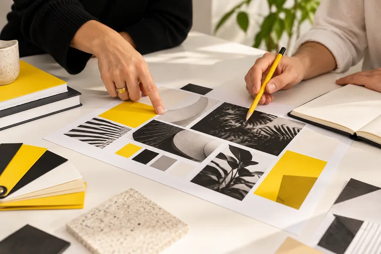

Logók vektoros újrarajzolása
Éles minden méretben. A meglévő logód tiszta, szerkeszthető vektorgrafikaként.
Répás János · Grafikai tervezés
Logó, csomagolás, kiadvány és digitális kreatívok. Átgondolva. Megvalósításra készen.
Több mint 10 év tapasztalat. Közvetlenül a tervezővel.

01 / Rólam
Répás János vagyok, grafikus és webdesigner. Több mint tíz év tapasztalattal adok formát a márkádnak.Az ALDI Magyarországnál és a TARSAGO-nál szerzett tudással. Az első vázlattól az utolsó részletig.
Jól néz ki. És működik. Képernyőn, csomagoláson és nyomtatásban is.Tiszta vektorgrafika, átgondolt elrendezés és pontos nyomdai előkészítés. Hogy a tervből kész megoldás legyen.
Ajánlatot kérekA márkád minden felületen. Válassz a grafikai szolgáltatások közül.
Mire van szükséged?
Éles minden méretben. A meglévő logód tiszta, szerkeszthető vektorgrafikaként.
Az első benyomás a polcon kezdődik. Csomagolásgrafika és pontos stancrajz, nyomdára készen.
Közelebb a vásárlóhoz. Eladáshelyi grafikák és displayek, átgondoltan és gyártásra készen.
Jó olvasni. Jó ránézni. Magazintördelés és kiadványszerkesztés, az első oldaltól az utolsóig.
Egy pillantásból figyelem. Facebook- és Instagram-hirdetési kreatívok, a márkádra hangolva.
Egy márka. Felismerhető hang. Közösségimédia-grafikák és egységes vizuális kampányok.
A játék lendülete. A márkád hangja. Sportgrafikák és kampánykreatívok digitális felületekre.
Már a lejátszás előtt mesél. Egyedi YouTube-bélyegképek, a videód karakterére hangolva.
Így dolgozunk együtt
Egyeztetéstől az átadásig. A tervezés az ajánlat jóváhagyásával indul.

Elmondod, mire kell a grafika. Egy vázlat vagy referencia is segíthet.
Egyeztetjük a célokat, a felhasználást és a határidőt.

Írásos ajánlatot kapsz a feladatról és a díjról.
Az elfogadott irányból elkészül az első terv.

Visszajelzésed alapján pontosítjuk a részleteket.
Megkapod a felhasználáshoz szükséges, rendezett fájlokat.
Gyakori kérdések
A díj a feladattól, a szükséges változatoktól és a határidőtől függ. A részletek egyeztetése után személyre szabott ajánlatot kapsz. A tervezést az elfogadott ajánlat alapján kezdjük.
Milyen grafikát szeretnél, hol használnád, és mikorra van rá szükséged? Ha van meglévő logód, szöveged vagy referenciád, azt is elküldheted. Kész terv nélkül is megkereshetsz.
A felhasználáshoz igazított fájlokat: nyomdai munkához megfelelően előkészített, digitális felületekhez megfelelő méretű anyagokat. A pontos formátumokat és az átadandó fájlokat az ajánlatban egyeztetjük.
03 / Kapcsolat
Meséld el, mire készülsz. A részleteket együtt pontosítjuk, majd egyedi ajánlatot kapsz.
Nem kell még minden részletet tudnod.
A gomb az e-mail-alkalmazásodat nyitja meg. Az üzenetet ott tudod elküldeni.
jrepas@icloud.com